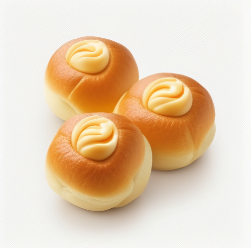

GreenTech was founded by a group of passionate engineers who wanted to revolutionize the automotive industry by creating cars that were both environmentally friendly and stylish. They were tired of the old gas-guzzling vehicles that dominated the market and believed that there was a better way to power cars.
After years of research and development, GreenTech unveiled their first car, the GT1. The sleek green design caught the attention of car enthusiasts and environmentalists alike, and the car quickly gained a following.
One of the most impressive things about the GT1 was its innovative engine. The car ran on a hybrid system that used both electricity and gasoline, resulting in significantly lower emissions and better fuel efficiency. The car's advanced energy management system allowed drivers to monitor their energy usage and reduce waste.
The success of the GT1 propelled GreenTech into the spotlight, and the company quickly became known for its commitment to sustainability and innovation. They continued to develop new models, each one more impressive than the last.
GreenTech's commitment to the environment extended beyond their cars. They used eco-friendly materials in their manufacturing process and worked to reduce waste and emissions at their factories.
As the years went on, GreenTech continued to thrive. They became one of the most respected car makers in the world, and their cars could be found on roads in every corner of the globe. They remained true to their founding principles, always striving to create cars that were both stylish and environmentally friendly.
In the end, GreenTech's legacy wasn't just the cars they made, but the example they set for the automotive industry. They showed that it was possible to create cars that were both fun to drive and good for the planet, and in doing so, they helped to create a more sustainable future for all.
|  | ||